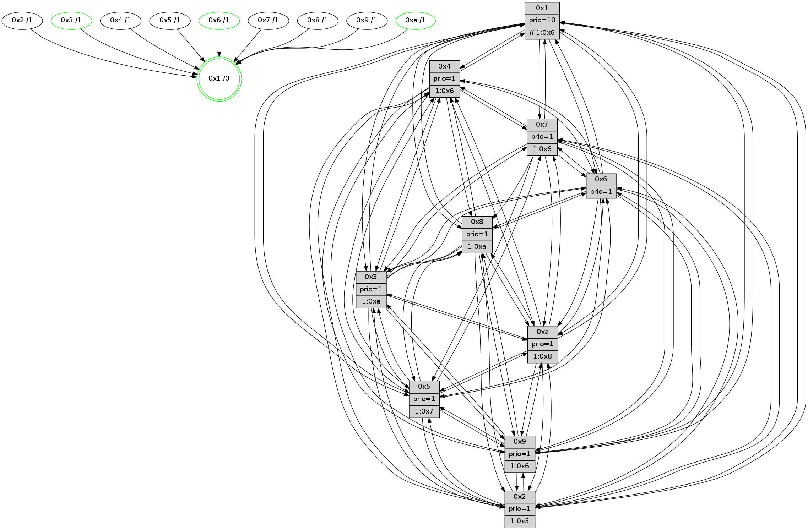

>> << IDX [start] -100 -25 -5 +0 +5 +25 +100 [1130.60840797]
 Previous packets
----------------------------------------------------------------------
1125.091490 beacon01(faad) #0 coord=01,02,03,04,05,06,07,0a,09,08 cycle=688.0ms assoc
-- color-indic=1 64 d7 7e
1125.101472 beacon02(faad) #0 coord=01,02,03,04,05,06,07,0a,09,08 cycle=688.0ms assoc 64 44 4f
1125.111472 beacon03(faad) #0 coord=01,02,03,04,05,06,07,0a,09,08 cycle=688.0ms assoc 64 3e 02
1125.121474 beacon04(faad) #0 coord=01,02,03,04,05,06,07,0a,09,08 cycle=688.0ms assoc 64 49 e8
1125.131474 beacon05(faad) #0 coord=01,02,03,04,05,06,07,0a,09,08 cycle=688.0ms assoc 64 33 a5
1125.141473 beacon06(faad) #0 coord=01,02,03,04,05,06,07,0a,09,08 cycle=688.0ms assoc 64 bd 72
1125.151475 beacon07(faad) #0 coord=01,02,03,04,05,06,07,0a,09,08 cycle=688.0ms assoc 64 c7 3f
1125.161479 beacon0a(faad) #0 coord=01,02,03,04,05,06,07,0a,09,08 cycle=688.0ms assoc 64 b6 34
1125.171479 beacon09(faad) #0 coord=01,02,03,04,05,06,07,0a,09,08 cycle=688.0ms assoc 64 38 e3
1125.181479 beacon08(faad) #0 coord=01,02,03,04,05,06,07,0a,09,08 cycle=688.0ms assoc 64 42 ae
1125.193405 [STC(6)->1 #0.170 tree-change,inconsistent-stability,stable,to-color d=1]
1125.194648 [STC(2)->1 #0.170 tree-change,inconsistent-stability,to-color d=1]
1125.196220 [Hello(7): seq=718 sym=2,3,5,6,4,8,9,10,1 sysInfo=hasWarning stat=2:5,12,5,0/3:6,12,4,15/5:11,0,1,1/6:3,15,2,9/4:11,13,4,1/8:2,5,11,1/9:15,1,4,1/10:6,2,5,4/1:6,1,8,0]
1125.198706 [Hello(8): seq=662 sym=5,2,3,4,9,6,7,10,1 sysInfo=hasWarning stat=5:2,6,1,0/2:12,2,13,9/3:5,15,1,15/4:4,15,6,10/9:5,7,2,3/6:3,13,15,13/7:2,12,15,4/10:4,4,5,3/1:6,15,7,0]
1125.201850 [STC(8)->1 #0.170 tree-change,inconsistent-stability,to-color d=1]
1125.203671 [STC(7)->1 #0.170 tree-change,inconsistent-stability,to-color d=1]
1125.206272 [Hello(9): seq=662 sym=2,5,3,4,7,6,8,10,1 sysInfo=hasWarning stat=2:2,6,9,7/5:10,11,9,5/3:5,9,15,15/4:3,8,1,1/7:7,10,2,0/6:1,4,5,11/8:1,11,12,3/10:4,5,15,3/1:5,5,7,1]
1125.209231 [Color(1) seq=399 @0:0 prio=10 >>1.@6,1.@7,1.@8]
1125.210993 [STC(9)->1 #0.170 tree-change,inconsistent-stability,to-color d=1]
1125.212919 [Hello(4): seq=718 sym=5,7,6,2,3,9,8,10,1 sysInfo= stat=5:8,12,12,14/7:5,3,9,9/6:12,10,13,12/2:12,5,5,13/3:8,6,13,11/9:7,13,1,11/8:6,0,15,5/10:4,3,4,12/1:14,7,8,1]
1125.215708 [Hello(10): seq=651 sym=6,2,3,8,7,5,9,4,1 sysInfo=hasWarning stat=6:2,13,15,6/2:4,12,2,10/3:2,3,4,11/8:10,12,7,1/7:4,8,15,6/5:10,12,12,14/9:15,15,15,2/4:2,0,0,0/1:6,9,1,1]
1125.218530 [STC(10)->1 #0.170 tree-change,inconsistent-stability,stable,to-color d=1]
----------------------------------------------------------------------
1125.879621 beacon01(faad) #0 coord=01,02,03,04,05,06,07,0a,09,08 cycle=688.0ms assoc
-- color-indic=1 64 13 70
1125.889603 beacon02(faad) #0 coord=01,02,03,04,05,06,07,0a,09,08 cycle=688.0ms assoc 64 80 41
1125.899603 beacon03(faad) #0 coord=01,02,03,04,05,06,07,0a,09,08 cycle=688.0ms assoc 64 fa 0c
1125.909603 beacon04(faad) #0 coord=01,02,03,04,05,06,07,0a,09,08 cycle=688.0ms assoc 64 8d e6
1125.919604 beacon05(faad) #0 coord=01,02,03,04,05,06,07,0a,09,08 cycle=688.0ms assoc 64 f7 ab
1125.929603 beacon06(faad) #0 coord=01,02,03,04,05,06,07,0a,09,08 cycle=688.0ms assoc 64 79 7c
1125.939604 beacon07(faad) #0 coord=01,02,03,04,05,06,07,0a,09,08 cycle=688.0ms assoc 64 03 31
1125.949608 beacon0a(faad) #0 coord=01,02,03,04,05,06,07,0a,09,08 cycle=688.0ms assoc 64 72 3a
1125.959609 beacon09(faad) #0 coord=01,02,03,04,05,06,07,0a,09,08 cycle=688.0ms assoc 64 fc ed
1125.969610 beacon08(faad) #0 coord=01,02,03,04,05,06,07,0a,09,08 cycle=688.0ms assoc 64 86 a0
1125.980555 [Hello(1): seq=628 sym=4,2,9,5,10,3,8,6,7 sysInfo=coloring-mode-on,ColoringModeRequestCalled stat=4:9,11,15,4/2:9,9,15,1/9:5,2,14,7/5:8,9,7,7/10:14,12,3,5/3:5,2,8,6/8:6,8,12,2/6:5,7,1,13/7:8,4,13,14]
1125.984187 [Color(10) seq=308 @0:0 prio=1 >1.@8]
1125.985748 [Hello(6): seq=719 sym=2,3,5,4,7,9,8,10,1 sysInfo=hasWarning stat=2:6,11,15,7/3:5,9,12,11/5:4,8,13,0/4:15,2,6,5/7:15,0,1,11/9:5,0,0,7/8:1,13,10,4/10:9,7,3,12/1:15,14,8,1]
1125.988764 [Hello(3): seq=719 sym=1,7,6,2,4,8,9,10,5 sysInfo=hasWarning stat=1:7,10,5,0/7:0,1,9,11/6:11,7,7,5/2:2,12,11,1/4:15,9,12,11/8:13,6,6,3/9:14,8,13,13/10:3,11,10,3/5:8,8,3,14]
1125.991423 [Hello(5): seq=719 sym=7,6,4,3,1,9,8,10,2 sysInfo=hasWarning stat=7:1,14,4,12/6:0,12,5,2/4:0,12,13,12/3:15,7,10,13/1:0,5,10,1/9:4,0,12,9/8:14,7,9,1/10:6,9,10,7/2:15,1,12,5]
1125.999989 [Color(6) seq=351 @0:0 prio=1]
----------------------------------------------------------------------
1126.667752 beacon01(faad) #0 coord=01,02,03,04,05,06,07,0a,09,08 cycle=688.0ms assoc
-- color-indic=1 64 af 75
1126.677735 beacon02(faad) #0 coord=01,02,03,04,05,06,07,0a,09,08 cycle=688.0ms assoc 64 3c 44
1126.687735 beacon03(faad) #0 coord=01,02,03,04,05,06,07,0a,09,08 cycle=688.0ms assoc 64 46 09
1126.697734 beacon04(faad) #0 coord=01,02,03,04,05,06,07,0a,09,08 cycle=688.0ms assoc 64 31 e3
1126.707736 beacon05(faad) #0 coord=01,02,03,04,05,06,07,0a,09,08 cycle=688.0ms assoc 64 4b ae
1126.717736 beacon06(faad) #0 coord=01,02,03,04,05,06,07,0a,09,08 cycle=688.0ms assoc 64 c5 79
1126.727735 beacon07(faad) #0 coord=01,02,03,04,05,06,07,0a,09,08 cycle=688.0ms assoc 64 bf 34
1126.737741 beacon0a(faad) #0 coord=01,02,03,04,05,06,07,0a,09,08 cycle=688.0ms assoc 64 ce 3f
1126.747741 beacon09(faad) #0 coord=01,02,03,04,05,06,07,0a,09,08 cycle=688.0ms assoc 64 40 e8
1126.757740 beacon08(faad) #0 coord=01,02,03,04,05,06,07,0a,09,08 cycle=688.0ms assoc 64 3a a5
1126.768902 [Hello(7): seq=719 sym=2,3,5,6,4,8,9,10,1 sysInfo=hasWarning stat=2:5,12,5,0/3:7,12,4,15/5:12,0,1,1/6:4,0,2,9/4:12,13,4,1/8:2,5,11,1/9:0,1,5,1/10:7,3,6,4/1:7,2,8,0]
1126.771613 [Hello(8): seq=663 sym=5,2,3,4,9,6,7,10,1 sysInfo=hasWarning stat=5:3,6,1,0/2:12,2,13,9/3:6,0,1,15/4:5,15,6,10/9:6,7,3,3/6:4,14,15,13/7:2,12,0,4/10:5,5,6,3/1:7,0,7,0]
1126.775931 [Color(1) seq=400 @0:0 prio=10 >>1.@6,1.@7,1.@8]
1126.778075 [Hello(9): seq=663 sym=2,5,3,4,7,6,8,10,1 sysInfo=hasWarning stat=2:2,6,9,7/5:11,11,9,5/3:6,9,15,15/4:4,8,2,1/7:7,10,2,0/6:2,5,5,11/8:1,11,12,3/10:4,6,0,3/1:6,5,7,1]
1126.786647 [Hello(10): seq=652 sym=6,2,3,8,7,5,9,4,1 sysInfo=hasWarning stat=6:3,14,15,6/2:4,12,2,10/3:3,4,4,11/8:10,12,7,1/7:4,8,15,6/5:11,12,12,14/9:15,15,15,2/4:2,0,0,0/1:7,9,1,1]
1126.793444 [Hello(4): seq=719 sym=5,7,6,2,3,9,8,10,1 sysInfo= stat=5:9,12,12,14/7:5,3,9,9/6:13,11,13,12/2:13,5,5,13/3:9,6,13,11/9:7,13,1,11/8:6,0,15,5/10:4,4,5,12/1:15,7,8,1]
----------------------------------------------------------------------
1127.455885 beacon01(faad) #0 coord=01,02,03,04,05,06,07,0a,09,08 cycle=688.0ms assoc
-- color-indic=1 64 7b 40
1127.465867 beacon02(faad) #0 coord=01,02,03,04,05,06,07,0a,09,08 cycle=688.0ms assoc 64 e8 71
1127.475867 beacon03(faad) #0 coord=01,02,03,04,05,06,07,0a,09,08 cycle=688.0ms assoc 64 92 3c
1127.485868 beacon04(faad) #0 coord=01,02,03,04,05,06,07,0a,09,08 cycle=688.0ms assoc 64 e5 d6
1127.495868 beacon05(faad) #0 coord=01,02,03,04,05,06,07,0a,09,08 cycle=688.0ms assoc 64 9f 9b
1127.505868 beacon06(faad) #0 coord=01,02,03,04,05,06,07,0a,09,08 cycle=688.0ms assoc 64 11 4c
1127.515868 beacon07(faad) #0 coord=01,02,03,04,05,06,07,0a,09,08 cycle=688.0ms assoc 64 6b 01
1127.525872 beacon0a(faad) #0 coord=01,02,03,04,05,06,07,0a,09,08 cycle=688.0ms assoc 64 1a 0a
1127.535873 beacon09(faad) #0 coord=01,02,03,04,05,06,07,0a,09,08 cycle=688.0ms assoc 64 94 dd
1127.545873 beacon08(faad) #0 coord=01,02,03,04,05,06,07,0a,09,08 cycle=688.0ms assoc 64 ee 90
1127.557684 [Hello(5): seq=720 sym=7,6,4,3,1,9,8,10,2 sysInfo=hasWarning stat=7:2,14,4,12/6:0,13,5,2/4:1,12,13,12/3:15,8,10,13/1:0,6,10,1/9:5,0,12,9/8:15,7,9,1/10:7,9,10,7/2:15,1,12,5]
1127.561348 [Hello(2): seq=716 sym=4,5,7,6,3,9,8,10,1 sysInfo=hasWarning stat=4:10,11,2,10/5:3,4,9,0/7:3,14,2,13/6:13,15,10,11/3:6,12,9,8/9:6,8,9,6/8:2,11,3,10/10:14,10,14,10/1:2,5,2,0]
1127.567469 PARSE ERROR************************
Traceback (most recent call last):
File "PacketAnalysis.py", line 167, in showOperaPacket
structPacket = OperaPacketParse.parsePacket(rawPacket)
File "../../pkg-python/HipSens/Core/OperaPacketParse.py", line 461, in parsePacket
return parseHelloMessage(data)
File "../../pkg-python/HipSens/Core/OperaPacketParse.py", line 127, in parseHelloMessage
assert struct.calcsize("H")*len(neighAddrList) == len(linkList)
AssertionError
48 34 06 00 02 d0 00 02 02 12 02 00 03 00 05 00 04 00 07 00 09 00 08 00 0a 00 01 00 53 04 00 02 00 00 4c 12 7f b6 bc 95 0d 84 56 20 b1 00 70 06 4a d2 c3 8a 18 f0 4c ef
1127.570843 [Hello(1): seq=629 sym=4,2,9,5,10,3,8,6,7 sysInfo=coloring-mode-on,ColoringModeRequestCalled stat=4:10,11,15,4/2:9,9,15,1/9:6,2,14,7/5:9,9,7,7/10:15,13,3,5/3:6,3,8,6/8:7,8,12,2/6:6,8,1,13/7:9,4,13,14]
1127.575883 [Color(6) seq=352 @0:0 prio=1]
1127.577460 [Color(10) seq=309 @0:0 prio=1 >1.@8]
1127.580897 [Hello(3): seq=720 sym=1,7,6,2,4,8,9,10,5 sysInfo=hasWarning stat=1:8,11,5,0/7:1,1,9,11/6:11,8,7,5/2:2,12,11,1/4:0,9,12,11/8:14,6,6,3/9:15,8,13,13/10:4,12,10,3/5:8,8,3,14]
1127.584041 [Color(3) seq=349 @0:0 prio=1 >1.@a]
----------------------------------------------------------------------
1128.244016 beacon01(faad) #0 coord=01,02,03,04,05,06,07,0a,09,08 cycle=688.0ms assoc
-- color-indic=1 64 c7 45
1128.253997 beacon02(faad) #0 coord=01,02,03,04,05,06,07,0a,09,08 cycle=688.0ms assoc 64 54 74
1128.263998 beacon03(faad) #0 coord=01,02,03,04,05,06,07,0a,09,08 cycle=688.0ms assoc 64 2e 39
1128.273999 beacon04(faad) #0 coord=01,02,03,04,05,06,07,0a,09,08 cycle=688.0ms assoc 64 59 d3
1128.283999 beacon05(faad) #0 coord=01,02,03,04,05,06,07,0a,09,08 cycle=688.0ms assoc 64 23 9e
1128.294000 beacon06(faad) #0 coord=01,02,03,04,05,06,07,0a,09,08 cycle=688.0ms assoc 64 ad 49
1128.304000 beacon07(faad) #0 coord=01,02,03,04,05,06,07,0a,09,08 cycle=688.0ms assoc 64 d7 04
1128.314003 beacon0a(faad) #0 coord=01,02,03,04,05,06,07,0a,09,08 cycle=688.0ms assoc 64 a6 0f
1128.323986 beacon09(faad) #0 coord=01,02,03,04,05,06,07,0a,09,08 cycle=688.0ms assoc 64 28 d8
1128.334005 beacon08(faad) #0 coord=01,02,03,04,05,06,07,0a,09,08 cycle=688.0ms assoc 64 52 95
1128.345861 [Hello(10): seq=653 sym=6,2,3,8,7,5,9,4,1 sysInfo=hasWarning stat=6:3,14,15,6/2:4,12,2,10/3:4,5,4,11/8:10,12,7,1/7:4,8,15,6/5:12,12,12,14/9:15,15,15,2/4:3,0,0,0/1:7,9,1,1]
1128.349804 [Hello(9): seq=664 sym=2,5,3,4,6,8,10,1 sysInfo=hasWarning stat=2:3,6,9,7/5:12,11,9,5/3:7,10,15,15/4:5,8,2,1/6:3,6,5,11/8:1,11,12,3/10:5,7,0,3/1:7,5,7,1]
1128.353340 [STC(1) #0.171 tree-change,inconsistent-stability,stable,to-color d=0]
1128.355601 [Color(1) seq=401 @0:0 prio=10 >>1.@6,1.@7,1.@8]
1128.359032 [Hello(4): seq=720 sym=5,6,2,3,9,8,10,1 sysInfo= stat=5:10,12,12,14/6:14,12,13,12/2:14,5,5,13/3:10,7,13,11/9:7,13,1,11/8:6,0,15,5/10:4,5,5,12/1:0,7,8,1]
1128.362094 [Hello(7): seq=720 sym=2,3,5,6,4,8,9,10,1 sysInfo=hasWarning stat=2:6,12,5,0/3:8,13,4,15/5:13,0,1,1/6:5,1,2,9/4:13,13,4,1/8:3,5,11,1/9:1,1,5,1/10:8,4,6,4/1:8,3,8,0]
1128.368767 [Hello(8): seq=664 sym=5,2,3,4,9,6,10,1 sysInfo=hasWarning stat=5:4,6,1,0/2:13,2,13,9/3:7,1,1,15/4:6,15,6,10/9:7,7,3,3/6:5,15,15,13/10:6,6,6,3/1:8,1,7,0]
----------------------------------------------------------------------
1129.032147 beacon01(faad) #0 coord=01,02,03,04,05,06,07,0a,09,08 cycle=688.0ms assoc
-- color-indic=1 64 03 4b
1129.042130 beacon02(faad) #0 coord=01,02,03,04,05,06,07,0a,09,08 cycle=688.0ms assoc 64 90 7a
1129.052130 beacon03(faad) #0 coord=01,02,03,04,05,06,07,0a,09,08 cycle=688.0ms assoc 64 ea 37
1129.062131 beacon04(faad) #0 coord=01,02,03,04,05,06,07,0a,09,08 cycle=688.0ms assoc 64 9d dd
1129.072131 beacon05(faad) #0 coord=01,02,03,04,05,06,07,0a,09,08 cycle=688.0ms assoc 64 e7 90
1129.082130 beacon06(faad) #0 coord=01,02,03,04,05,06,07,0a,09,08 cycle=688.0ms assoc 64 69 47
1129.092130 beacon07(faad) #0 coord=01,02,03,04,05,06,07,0a,09,08 cycle=688.0ms assoc 64 13 0a
1129.102134 beacon0a(faad) #0 coord=01,02,03,04,05,06,07,0a,09,08 cycle=688.0ms assoc 64 62 01
1129.112136 beacon09(faad) #0 coord=01,02,03,04,05,06,07,0a,09,08 cycle=688.0ms assoc 64 ec d6
1129.122136 beacon08(faad) #0 coord=01,02,03,04,05,06,07,0a,09,08 cycle=688.0ms assoc 64 96 9b
1129.133548 [Hello(5): seq=721 sym=7,6,4,3,1,9,8,10,2 sysInfo=hasWarning stat=7:3,14,4,12/6:1,14,5,2/4:2,12,13,12/3:0,9,10,13/1:1,7,11,1/9:6,0,12,9/8:0,7,9,1/10:8,10,10,7/2:0,1,12,5]
1129.136381 [Hello(1): seq=630 sym=4,2,9,5,10,3,8,6,7 sysInfo=coloring-mode-on,ColoringModeRequestCalled stat=4:11,11,15,4/2:9,9,15,1/9:6,2,14,7/5:9,9,7,7/10:0,14,3,5/3:7,4,8,6/8:8,8,12,2/6:6,9,1,13/7:10,4,13,14]
1129.139104 [Hello(2): seq=717 sym=4,5,7,6,3,9,8,10,1 sysInfo=hasWarning stat=4:11,11,2,10/5:3,4,9,0/7:4,14,2,13/6:14,0,10,11/3:7,13,9,8/9:7,8,9,6/8:3,11,3,10/10:15,11,14,10/1:3,6,3,0]
1129.141962 [STC(5)->1 #0.171 tree-change,inconsistent-stability,to-color d=1]
1129.143706 [Hello(3): seq=721 sym=1,7,6,2,4,8,9,10,5 sysInfo=hasWarning stat=1:8,12,6,0/7:2,1,9,11/6:11,8,7,5/2:2,12,11,1/4:1,9,12,11/8:15,6,6,3/9:0,8,13,13/10:5,12,10,3/5:9,8,3,14]
1129.146333 [STC(2)->1 #0.171 tree-change,inconsistent-stability,to-color d=1]
1129.148014 [STC(10)->1 #0.171 tree-change,inconsistent-stability,stable,to-color d=1]
1129.150932 [Color(10) seq=310 @0:0 prio=1 >1.@8]
1129.152420 [STC(3)->1 #0.171 tree-change,inconsistent-stability,stable,to-color d=1]
1129.154677 [Color(3) seq=350 @0:0 prio=1 >1.@a]
1129.156758 [STC(6)->1 #0.171 tree-change,inconsistent-stability,stable,to-color d=1]
1129.158251 [STC(9)->1 #0.171 tree-change,inconsistent-stability,to-color d=1]
1129.159481 [Color(6) seq=353 @0:0 prio=1]
----------------------------------------------------------------------
1129.820279 beacon01(faad) #0 coord=01,02,03,04,05,06,07,0a,09,08 cycle=688.0ms assoc
-- color-indic=1 64 bf 4e
1129.830260 beacon02(faad) #0 coord=01,02,03,04,05,06,07,0a,09,08 cycle=688.0ms assoc 64 2c 7f
1129.840261 beacon03(faad) #0 coord=01,02,03,04,05,06,07,0a,09,08 cycle=688.0ms assoc 64 56 32
1129.850263 beacon04(faad) #0 coord=01,02,03,04,05,06,07,0a,09,08 cycle=688.0ms assoc 64 21 d8
1129.860261 beacon05(faad) #0 coord=01,02,03,04,05,06,07,0a,09,08 cycle=688.0ms assoc 64 5b 95
1129.870262 beacon06(faad) #0 coord=01,02,03,04,05,06,07,0a,09,08 cycle=688.0ms assoc 64 d5 42
1129.880263 beacon07(faad) #0 coord=01,02,03,04,05,06,07,0a,09,08 cycle=688.0ms assoc 64 af 0f
1129.890268 beacon0a(faad) #0 coord=01,02,03,04,05,06,07,0a,09,08 cycle=688.0ms assoc 64 de 04
1129.900268 beacon09(faad) #0 coord=01,02,03,04,05,06,07,0a,09,08 cycle=688.0ms assoc 64 50 d3
1129.910268 beacon08(faad) #0 coord=01,02,03,04,05,06,07,0a,09,08 cycle=688.0ms assoc 64 2a 9e
1129.921453 [Hello(9): seq=665 sym=2,5,3,4,7,6,8,10,1 sysInfo=hasWarning stat=2:3,6,9,7/5:12,11,9,5/3:7,10,15,15/4:6,8,2,1/7:0,0,0,0/6:3,7,5,11/8:2,11,12,3/10:5,7,0,3/1:7,6,8,1]
1129.924129 [Hello(4): seq=721 sym=5,7,6,2,3,9,8,10,1 sysInfo= stat=5:11,12,13,14/7:0,0,0,0/6:14,13,14,12/2:15,5,6,13/3:11,8,14,11/9:7,13,2,11/8:7,0,15,5/10:4,6,6,12/1:1,7,8,1]
1129.927270 [Hello(7): seq=721 sym=2,3,5,6,4,8,9,10,1 sysInfo=hasWarning stat=2:6,12,6,0/3:9,14,5,15/5:14,0,2,1/6:6,2,3,9/4:13,13,4,1/8:4,5,11,1/9:1,1,6,1/10:8,5,7,4/1:9,3,8,0]
1129.932969 [Hello(10): seq=654 sym=6,2,3,8,7,5,9,4,1 sysInfo=hasWarning stat=6:3,15,0,6/2:4,12,2,10/3:4,6,5,11/8:11,12,7,1/7:5,8,15,6/5:13,12,12,14/9:0,15,0,2/4:4,0,0,0/1:8,10,2,1]
1129.939556 [Hello(8): seq=665 sym=5,2,3,4,9,6,10,1 mpr= sysInfo=hasWarning stat=5:5,6,2,0/2:14,2,14,9/3:8,2,2,15/4:6,15,6,10/9:7,7,4,3/6:5,0,0,13/10:6,7,7,3/1:9,1,7,0]
1129.943383 [Color(1) seq=402 @0:0 prio=10 >>1.@6,1.@7,1.@8]